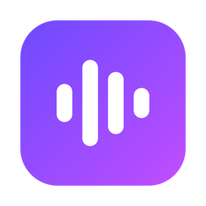

Live transcript as you talk
Words appear seconds after they're spoken, with smart pauses so sentences never get chopped in half. Click any line to replay that moment.

Speakup PRO Download freeSpeakup PRO listens to your meetings, writes a live transcript, knows who said what, and turns it all into crisp notes and action items — right on your own computer.
Ums, restarts, cross-talk — Speakup PRO cleans it up, keeps everyone's words, and pulls out what matters.
Priya so um okay let's let's get started uh Daniel how's the the mobile release going
Daniel yeah so we're we're on track the beta goes out to testers on Monday and uh we fixed the login crash finally
Rishi I can I can set up the analytics dashboard so we like track beta signups
Priya perfect Rishi have that ready by uh Wednesday
Daniel one risk is the app store review it could take a few extra days you know
Priya so um Okay, let's get started. Daniel, how's the mobile release going?
Daniel We're on track. The beta goes out to testers on Monday, and we fixed the login crash finally.
Rishi I can set up the analytics dashboard so we can track beta signups.
Priya Perfect. Rishi, have that ready by Wednesday.
Daniel One risk is the App Store review — it could take a few extra days.
The mobile beta ships to testers on Monday after the login crash fix. Analytics will track signups, and App Store review timing is the main risk.
App Store review could add a few days.
Words appear seconds after they're spoken, with smart pauses so sentences never get chopped in half. Click any line to replay that moment.
Voices are recognised automatically. Rename "Speaker 2" to "Priya" once and it sticks.
Summary, key points, action items with owners and deadlines — the moment you hit stop.
Ask across every meeting you've ever recorded — or anything else.
Grammar, spelling, clarity and tone fixes for your notes and emails. Accept with one click.
Captures your mic and your computer's audio — so Zoom, Meet and Teams participants get transcribed too.
Already have a recording? Drop in an MP3, M4A, WAV or MP4 and get a transcript with speaker labels in seconds.
Languages, including English, Hindi, Spanish, French, German and Japanese.
One shortcut to start and stop. Search, copy or export any meeting as Markdown.
Most AI notetakers upload your calls to someone else's servers. Speakup PRO runs its speech recognition, speaker detection and AI right on your own computer. No cloud. No bot joining your calls. No account to hack.
No trial that runs out. No minutes cap. No "Pro" upsell hiding the good stuff. It's already PRO.
Install in under a minute. On first launch it fetches its on-device AI once, in the background.
Click the floating pill or press ⌥R. Talk like a human. Watch the transcript appear.
Notes, action items and speaker labels are ready. Ask follow-ups, polish, or export.
It's really free. Because everything runs on your own computer, there are no server costs to pass on to you — so there's no subscription, no account and no ads.
No. Speech recognition, speaker detection and the AI all run locally. The only internet use is a one-time download of the AI models on first launch; after that you can record with Wi-Fi off.
Yes. Turn on "Also capture computer audio" and Speakup PRO records the call audio alongside your mic. No bot joins the meeting, so nobody sees an extra participant.
A Mac (Apple Silicon or Intel, macOS 12 or later) or a Windows 10/11 PC, 8 GB of RAM or more, and about 2.5 GB of free disk space for the app and its on-device AI. Newer computers write notes faster — on Apple Silicon it's quick.
Very. English and 24 European languages use NVIDIA Parakeet, a fast, highly accurate open speech model — in our tests on real recorded speech it got about 97% of words right. Other languages use Whisper. Like any AI, it can occasionally mishear a name or mix up who said what, so give important details a quick look.
Yes. Click Upload recording (or drag a file onto the app) and choose an audio or video file — MP3, M4A, WAV, AAC, MP4, MOV and more. You get the full transcript with speaker labels and AI notes, all processed on your computer.
The installers aren't code-signed yet. On Mac, right-click the app and choose Open. On Windows, click More info → Run anyway. You only need to do this once.
Speakup PRO was built by Sanchit Goyal. Ask the in-app assistant — it'll tell you the same.
Product updates, new features first, and one quick tip a day to make your meetings shorter.
Free download. No account. Start recording in under a minute.
Not sure which Mac? Apple menu → About This Mac. "Chip: Apple M…" = Apple Silicon.